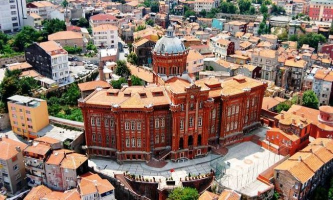
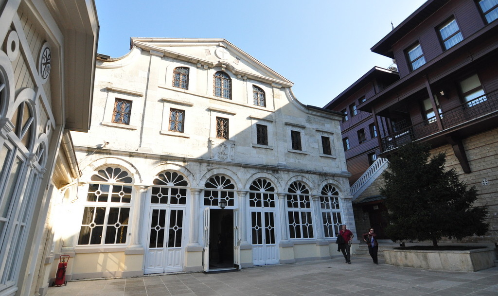
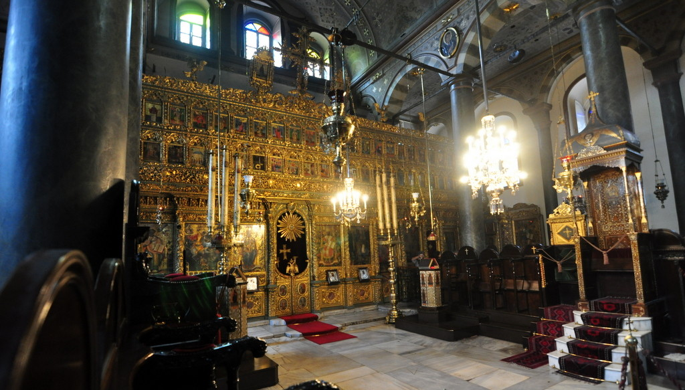
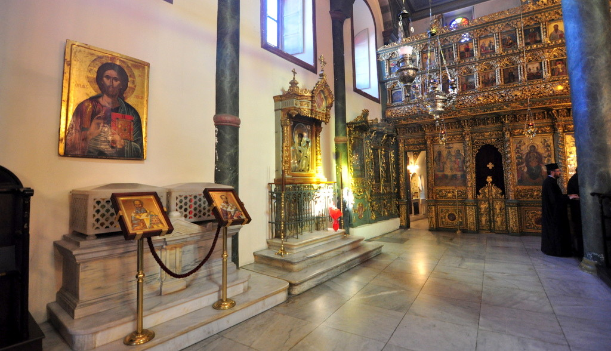
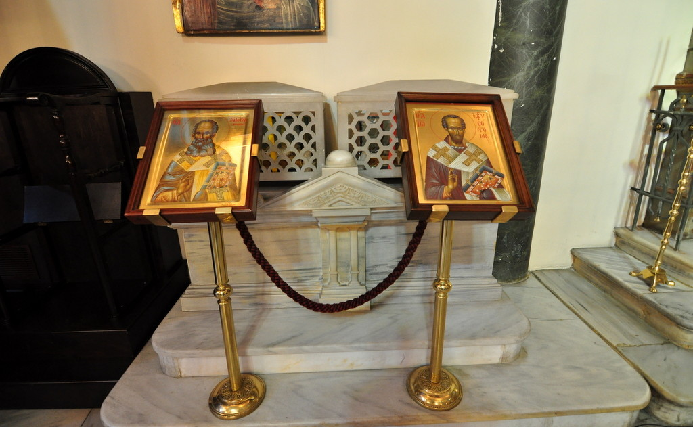

St. Antony of Padua Katolik Kilisesi
AçıklamaHristiyanlık öğretisi, Hz. İsa‘nın ardından havarileri tarafından yayılmaya devam etti. Havariler Antik Çağ‘da dünyanın merkezi olan Akdeniz kıyılarında Hristiyanlığı yaymak için gayret sarf ettiler. Aziz Petrus ve Aziz Paul, Antik Çağ’ın en önemli kenti olan Roma’ya kadar gittiler. Bu sebeple, Roma Hristiyanlar için her zaman önemli bir şehir olagelmiştir. Bunun yanında Antik Çağ‘ın kültürel merkezleri olan İskenderiye, Kudüs, Antakya, İstanbul gibi şehirler de Hristiyanlığın önemli merkezleriydi. Roma İmparatorluğu içinde varlık gösteren Hristiyanlar, yaklaşık 300 yıl boyunca zulme uğradılar. Kapadokya‘da olduğu gibi, derin vadilere veya sarp kayalıklara kiliseler ve manastırlar inşa eden Hristiyanlar, sert uygulamalara rağmen varlıklarını sürdürmeyi başardılar. İmparator Büyük Konstantin Hristiyanlık öğretisinin önlenemez yükselişini fark eden ilk Roma İmparatoru, Konstantin oldu. İmparator Konstantin, bu yeni ve güçlü inanışı, çöküşte olan Roma İmparatorluğu’nu birleştirecek bir itici güç olarak kullanmak istedi. Birinci İznik Konsili Hristiyanlığı kabul ettiğinde ilk olarak, güçlü bir örgütlenme kurmak istedi. Bu amaçla da Birinci İznik Konsili‘ni topladı. (First Ecumenical Council of Nicea). Bu konsilde Roma, Konstantinopolis (İstanbul), Antioch (Antakya), Jerusalem (Kudüs) ve Alexandria (İskenderiye) beş önemli Hristiyanlık merkezi olarak kabul edildi. Roma Ve Konstantinopolis Çekişmesi Hiyerarşide ilk zamanlar Roma başta gelse de, İmparator Theodosius döneminde (4. Yüzyıl sonu) İstanbul ile Roma‘nın statüsü eşitlendi. Bu uzun vadede iki kilise arasında bir husumete neden oldu. Yükselen tansiyon, 1054 yılında Büyük Ayrılık (Great Schizm) ile patlak verdi. Konstantinopolis’teki Patrik ile Roma’daki Papa birbirlerini karşılıklı aforoz ettiler.  Patrikhane merkezindeki Aya Yorgi Kilisesi ise ruhani merkezdir ve tüm ayinler burada yapılır. Dışarıdan oldukça sade bir görünüme sahip olan bu kilise, Doğu Hristiyanları için büyük önem taşır. Katolikler için Roma’daki St. Pietro (Aziz Petrus) Katedrali ne kadar önemli ise, Ortodokslar için de St. George Kilisesi o kadar önemlidir. Bu sebeple Türkçe telaffuzu ile Aya Yorgi Kilisesi, dünyanın dört bir yanından Ortodoks Hristiyanlar tarafından ziyaret edilmektedir.  Kilisenin içine girdiğinizde karşınıza çıkan altın varaklarla bezeli, ikona duvarı nefes kesici güzelliktedir. Ortodoks inancı için çok büyük öneme sahip ikonaların yan yana sıralandığı bu ahşap oyma duvar, tam anlamıyla el emeği göz nuru ile işlenmiştir. Efsaneye göre bu tahtı kullanan ilk kişi, geçmişin en meşhur Konstantinopolis Patriklerinden biri olan John Chrysostom‘dur. (Yaşamı 347-407) Ancak bazı yazılı kaynaklar tahtın 1577 yılında yapıldığını öne sürmektedir. Ceviz ağacından yapılmış olan taht, çeşitli sedef kakma ve fildişi süslemeleriyle ön plana çıkar. Vaiz kürsüsünü seçebilmek için sütunların üstüne bakmak gerekir. Mermer sütunun üzerine zarif bir şekilde yerleştirilmiş olan kürsü, yine ceviz ağacından yapılmıştır. Bazı efsanelerde yine John Chrysostom‘a dayandırılsa da, 1702 yılında yapıldığına dair yazılı kaynaklar vardır. İkonalar, ekseriyetle Hz. İsa‘yı, Hz. Meryem‘i ve Vaftizci Yahya‘yı betimler. Bu üç önemli karakterin haricinde; Havariler, azizler ve azizeler de resmedilmiştir. Hristiyanlık inancında, ikonaya dua eden bir insan, ikona üzerindeki suret aracılığı ile simgelenen kişiye ulaşır. Bu sebeple ikonalar çok kutsaldır. Patrikhane ziyareti sırasında rahiplerin veya Ortodoks ziyaretçilerin ikonalara büyük saygı gösterdiğini, dokunduğunu ve hatta öptüğünü görebilirsiniz. Bu sebeple ikonaların fotoğraflarını çekmek uygunsuz bir davranıştır. Fener Rum Patrikhanesi’nde Panaghia Pammakaristos (11. Yüzyıl), St. John the Baptist (11. Yüzyıl) ve Panaghia Faneromeni (14 Yüzyıl) adlarıyla üç önemli ikona vardır. Bu ikonaların elbette manevi kıymeti çok yüksektir. Böyle önemli ikonaların varlığı, kiliselerin inananlar gözündeki ruhani gücünü artırır.  Kilisenin Kuzey kanadında, Basil the Great, Gregory the Theologian ve John Chrysostom isimli üç önemli Patrik‘in naaşları bulunur. Bu patriklerden ikisinin kemikleri, üst satırlarda bahsettiğimiz Latin İstilası sırasında İstanbul’dan çalınmış ve Roma‘ya götürülmüştür. Uzun yıllar Vatikan‘daki St. Pietro Katedrali‘nde muhafaza edilen naaşlar, Latin İstilası’nın 800. yıl dönümü olan 2004 yılında, bir iyi niyet göstergesi olarak, Papa tarafından iade edilmiştir.  Kilisenin Güney kanadında, St. Euphemia, İmparatoriçe Theophano ve Mary Salome isimli üç önemli azizenin lahitleri görülebilir. Bu lahitler yılın belli bir günü kilisenin merkezine getirilmekte ve ziyaretçilerin anma dualarına fırsat sağlanmaktadır.
Fener ve Balat semtleri günümüzde İstanbul’un yükselen değerleri haline geldiler. Osmanlı dönemi İstanbul’unun en renkli ve kozmopolit yerleri olan bu güzide semtler, fotoğraf gezilerinin ve tur gruplarının uğrak noktası olmaya başladı. |
|
Ayin saatleri şu şekildedir; Pazar günleri 09:15 ile 12:20 saatleri arası, pazar ayini dışında her gün 08:30 – 16:00 arasında halkın ziyarete açık. |
|
|
Adres: Yavuz Sultan Selim, Dr. Sadık Ahmet Cd. No:44, 34083 Fatih/İstanbul |
|
|
Kapalı Günler: Her gün açıktır. |
Giriş Ücreti : Ücretsiz |